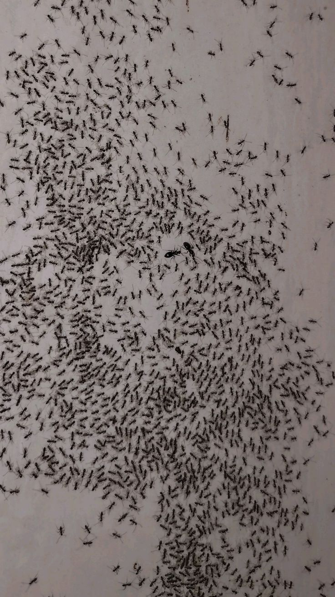
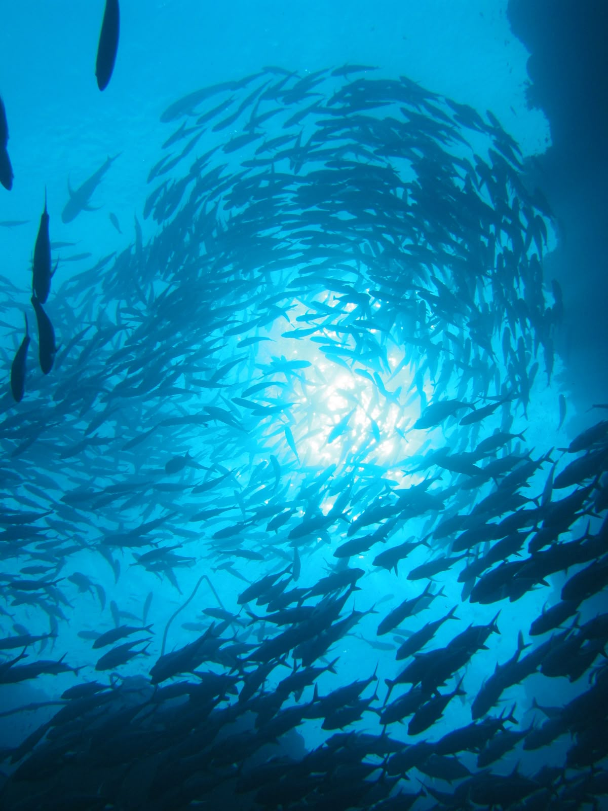
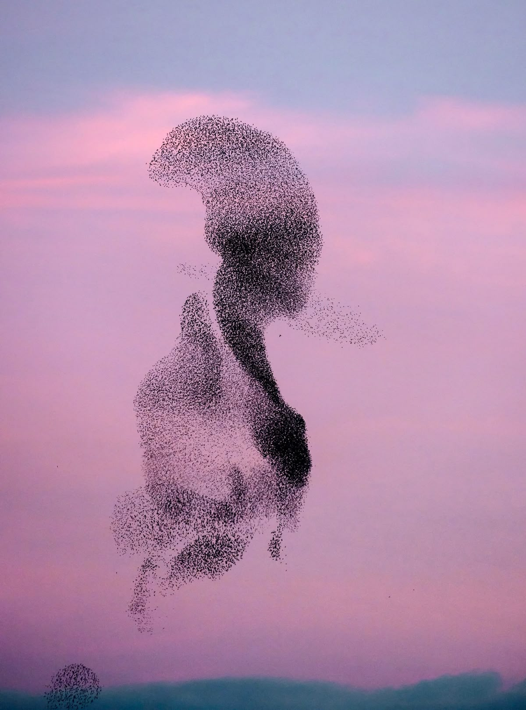
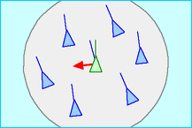
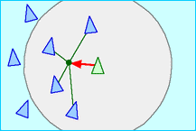
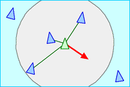

BOIDS
presentation by: skyla trousdale
WHAT RULES DO THE BIRDS FOLLOW?
We must define the behavior of a single bird so that when a lot of instances of the bird are simulated, they flock convincingly. The flock seems to be following a leader, but each time they turn, a new bird becomes the leader. The flock changes direction like a single unit, yet it is just an assembly of individuals. The flock is a dense cluster, but the birds do not often collide. - Reynolds (link)
HISTORY OF BOIDS ALGORITHM
boids algorithm was developed in
Flocking in Nature
ants

fish

birds

BOIDS playground

steer towards the average heading of local flockmates. boids roughly match the velocity of their neighbors

steer to move toward the average position of local flockmates. boids move towards the center of mass of their neighbors

steer to avoid crowding local flockmates. boids move away from other boids if too close
RESOURCES
resources i used to research and create this presentation
Nature of Code: Autonomous-Agents - By Craig Reynolds Boids (Background and Update) - By Craig Reynolds Flocking Simulation - By Coding Train Flight of the Starlings - By National Geographic